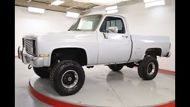
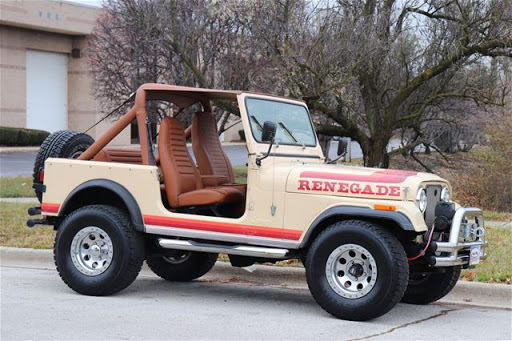
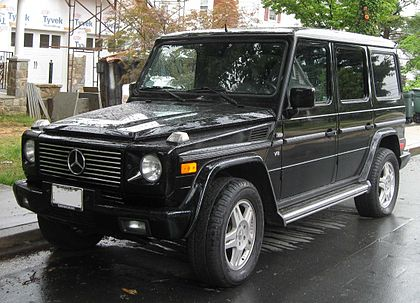

Vintage 4x4

History
Cars that are labled as a "vintage" care are any type of car that is older than 25 years, with cars over 45 years old known as antiques, whereas insurance providers have a wide range of classifications. So these vintage cars are older cars that are in a wide variety of conditon, such as being rusted or looking brand new. Vintage 4x4 refers to the vintage 4 wheel drive trucks that existed 25 years or longer ago. These types of trucks are widely collected by car enthusiests. Some non-rare vintage 4x4s are priced as low as $10,000. Some rare vintage 4x4s are going for $75,000+.
Jeep CJ7 Renegade

Discription
The CJ7 continues to be used in the sport of mud racing, with either the stock body or a fiberglass replica. CJ7 has been successfully and widely used as a favorite for rock crawling, through simple and complex modification.
Specs
Horsepower: 110 hp
Torque: 205 lb-ft
0-60: 12.1 seconds
Price: $6k-$11k
4 Wheel Drive
Click here to buy the JEEP CJ7 Renegade
Mercedes- Benz G-Class W463

Discription
The first generation W463 had the widest range of engines ever fitted to Mercedes-Benz vehicles during its entire 28-year model run: from four to twelve cylinders; and from naturally aspiration to supercharger, turbo, and twin turbo. Toward the end of first-generation model run, W463 had the highest number of paint color options at 22, including the bright and intense colors as part of Crazy Color Edition.
Specs
Horsepower: 211 hp
Torque: 221 lb-ft
0-62: 12.1 seconds
Price: $379,000
4 Wheel Drive
Click here to find out more about the Mercedes Benz G Class W463